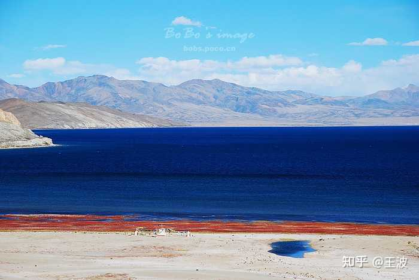

【转载】如何判断一张照片使用什么焦距拍摄的（短、中、长焦）？
转载。感觉研究各焦距下的画面能够反哺绘画，帮助决定消失点，同时检验焦距是否合理。
Author: [王波]
Link: [https://www.zhihu.com/question/268338146/answer/2025211457]
转载未征求过原作者的意见（因为这个博客反正没人看……），这里只是想做个备份，但倘若作者不同意该转载，请联系我，我即刻会删除它。
如何判断一张照片使用什么焦距拍摄的（短、中、长焦）？
这个问题很好，因为这个技能超有用啊，如果掌握了这样的能力，那么相当于我们可以反向解密出别人的照片，从而学到如何拍的，对不对？
查看EXIF
这段可能是废话，但是还真有人不知道的。
每张数码照片都包含了EXIF信息，其中就有焦段的信息。
比如在图虫网站，照片的右侧，点击“更多”，就可以看到完整的EXIF信息，里面有焦段的信息。
这张图的链接：
魔鬼城 - 一镜收江南在你自己硬盘上的照片，点击右键也可以看到，或者用LR，光影魔术手， exiftool等软件都可以查看。
EXIF信息是可以删除的，所以本文要讨论的重点是：
如何仅仅从画面的内容，来判断焦段？
1. 根据重复的元素判断
这几乎是最为常用的方法了。
画面中如果出现远近不同重复的对象，那么我们就可以通过重复对象的大小关系来判断焦距。
广角拍摄的重复对象，近大远小的效果要比人眼所见更为夸张。
下面这张额济纳旗拍摄的胡杨林，满地的落叶，但是近处的落叶显得特别大，特别夸张，所以这是用超广角拍摄的。（其实是因为我们离开很近的关系）
超广角拍摄的额济纳旗胡杨林，近处的树叶显得特别大，比人眼透视更为夸大
长焦拍摄的重复对象，不管远近，大小都趋于一致。
下面这张拍摄的新疆的禾木村，村子很大，但是我们可以看到前后的房子感觉都差不多大，所以这是用长焦拍摄的透视感，弱化了近大远小的效果。（其实是因为我们离开很远的关系）
长焦拍摄的新疆禾木村，房子都差不多大，其实距离差别很大
而中焦拍的照片，重复的元素近大远小透视感接近人眼的感觉，下面这张东京六本木的夜樱，就是52mm焦距拍摄的，很接近人眼看到的透视感。
为了更加具体的说明这一点，我花了很久，在我自己拍的照片里找到了一些几乎同场景用不同焦距拍摄的例子。
1.1 胡杨林
下面这张照片中的胡杨林，是重复的元素。
一条木栈道通向远方，说明画面里面的树木沿着纵深越来越远的，但是对比前排的树木和远方的树木，大小差异却显得并不明显（和人眼感受做常识比较），由此可以推断这是长焦拍摄，不过应该是不算很远的长焦。
实际焦距为120mm
下图拍的是死胡杨，这个地方并非只有一棵树，如果我们细心观察，我们会发现远处的地面，有很小的胡杨树干，这就是附近的胡杨树，只是在超广角镜头的作用下，前景被极度夸大，后景被极度缩小，所以形成了这样的效果，远远超出人眼的透视感受，我们可以推测这张照片是使用超广角拍摄。
实际焦距为15mm
1.2 蓝花楹
下面这张蓝花楹，是我的同行摄友Tim拍摄。
画面中的树是重复的元素。从画面里可看出，街道两旁的蓝花楹树，显得近大远小非常明显，看上去可能要比人眼更夸张一点，所以我们可以推测这是广角拍摄的。
实际他是用16-35这个镜头拍摄的。
同样的场景，画面里街道对面的三颗蓝花楹树，明显大小区别不大，没有人眼感受的近大远小强，所以这张照片应该是长焦拍摄的。
这张照片的实际焦距为100mm
1.3 油菜花
下面这张照片拍的是澳洲的油菜花。
油菜花是重复的对象。从画面可见，近处的油菜花是要比远处明显大的，所以猜测这是广角拍摄的。
实际焦距是24mm
下面这张照片中的油菜花还有树都是重复元素，近处和远处的油菜花相差很小，而画面左右的两棵树，应该相距比较远，但是大小差别不大，由此可以推断是长焦拍摄，而且是比较长的长焦。
实际焦距200mm
下面这张图中的油菜花和树都是重复元素。从地势的起伏可以看出画面包含的前后距离其实很远，但是前面绿色的作物和黄色的油菜花大小看不出区别，画面里的树也显得大小都差不多，由此可以猜测是用非常长的长焦拍摄的。
实际焦距400mm
1.4 红叶小教堂
下面这张照片是拍摄于澳洲的一个红叶小教堂。
画面两旁的树是重复的元素。从画面里可以看到两旁的树一边大约有10来棵的样子，照理说前后距离应该不短，但是这些树的大小非常接近，由此可以判断焦距应该是非常长的长焦拍摄的。
实际焦距为210mm
我找到了同一个场景下我踩点的时候拍的照片，树近大远小非常明显，这是广角拍摄的透视感，实际焦距24mm。
因为是完完全全同一个场景，这大家可以比较一下这张广角拍摄照片和前面一张长焦拍摄的照片里的：1. 树距 2. 树的粗细 3。 还有天空的遮挡。更深的体会我提到的“重复元素的透视感”。
2. 根据天空的渐变来判断
我们知道由于不同方向大气的厚度不同，所以越往头顶的天空越蓝， 越往天边的天空越白（灰）。
假设我们用广角镜头拍摄，那么我们就可以很好的还原天空的过度，广角越广，收入的天空越多，天空的渐变就越厉害。但是当我们用长焦拍摄的时候，由于我们截取的只是天空的一部分，所以这个渐变就会很不明显，甚至看不出。
我找了一些我实际拍摄的例子，大家可以感受一下。
下图拍摄的是胡杨林，除了可以通过“重复的元素”看出近的树比远处的树大很多以外，我们也可以看到天空的渐变是非常的明显的，所以这是一张广角拍摄的照片。
实际焦距24mm
额济纳旗胡杨林，广角24mm拍摄
下面这张照片天空从远处的淡蓝色到右上角的深蓝色，渐变是非常的明显的，所以也是广角拍摄的。
实际焦距23mm
西藏纳木错，广角拍摄，焦距23mm
下面这张照片，天空的渐变显得并不明显，所以推测是用长焦拍摄。
实际焦距105mm
西藏喜马拉雅山脉，105mm长焦拍摄
下面这张照片拍摄于西藏的玛旁雍错，从画面可见天空的渐变几乎看不出，所以推断是长焦拍摄。
实际焦距128mm

西藏玛旁雍错，128mm长焦拍摄
不过这个判断会有一个问题，就是如果拍摄者前期或者后期使用了渐变镜，就无法判断了。
比如说下图是我用180mm长焦拍摄的珠峰，所以天空的渐变色完全不可见。
但是我又拍了一张，用上了三档的渐变灰滤镜，这个时候拍出来的感觉就很类似中焦广角拍摄的了，让人很难判断。
所以我也经常用这个手法在我的长焦照片里，让人不知觉的误解照片透视的关系。
这张照片明明是长焦拍的，但是给人以广角的透视感以后，距离感就一下子拉近了，这样山就显得更加雄伟高大有压迫感了。
这也是理解焦距以后的反向应用之一。
3. 根据线条透视来判断
用广角镜头拍摄如果有仰俯角，那么画面中的平行线很容易变得不平行，形成汇聚点，焦距越广，被摄对象离开越近，越明显，这种现象常常用在判断建筑摄影里。
比如下面这张拍摄于罗马的许愿池，可以看到许愿池背后的楼下宽上窄，立柱向上延伸出的线条，并不平行，会在画面外汇聚成点，这就是典型的广角镜头拍建筑，有仰角的效果。
实际焦距为15mm
许愿池，广角拍摄，焦距15mm
下面这张拍摄的高雄的美丽岛火车站，从照片可以看到中间的立柱，是下宽上窄，延伸出去以后会汇聚一点，而根据常识我们可知，这两根立柱应该是垂直地面平行的，所以这应该是广角镜头有仰角拍摄的。
实际 焦距16mm
美丽岛火车站，广角拍摄，16mm
下面这张油菜花，地面的线条汇聚成远方的一点，聚拢效果明显，但是根据常识判断，这应该是收割的车压出的线，应该是平行的，所以这样的聚拢效果，是因为广角镜头没有垂直地面拍摄，而是斜角度俯瞰造成的，所以这张镜头应该是用广角拍摄的。
实际焦距24mm
澳洲油菜花，广角拍摄，焦距24mm
下面这张照片中的建筑离开我们有点远，虽然不容易观察，但是还是可以看出建筑线条的距离效果的。纵观整个画面，更为明显的是，画面的近处有云，而且我们看到因为慢速快门的关系，云都浮动起来了，而且汇聚成一点，按照常识，云应该是顺风浮动的，也就是说，应该是基本朝着一个方向平行浮动的，而画面中的云，呈现了强聚拢浮动效应，所以这个画面应该是超广角拍摄的。
实际焦距16mm
下面这张照片拍摄于卢浮宫外面，可以看到画面中的建筑基本平直，没有很明显的聚拢倾向，但是仔细观察水池里的平行线条，还是可以看到聚拢和近大远小的透视的，很接近人眼观感，所以这张照片推测是使用中焦拍摄。
实际焦距45mm.
卢浮宫，45mm中焦拍摄
4. 根据熟悉的对象来判断
有些对象是我们特别熟悉的，比如说，熟悉的人。
因为我们需要对人脸进行识别，所以我们会对人脸的特征比一般对象更为敏感。
不同焦距对于人脸也是有不同的透视效果的。
下面这张图，展示了从200mm长焦到24mm广角拍摄的大头照片。
仔细观察，你可以发现，广角拍摄的头像，鼻子都高了很多，两面的腮帮都往后显得下巴尖了，而长焦会让人显得扁平化，腮部往前，下半脸轮廓都变了，鼻子也没那么高了。
参考网站：
Facial distortion of various focal lengths for headshots为了展示效果，我找到了一张用insta360全景相机的鱼眼超广角拍摄的自拍人像，效果极为夸张，我变成了头比身体还大的卡通宝宝形象。
insta360 鱼眼广角自拍
除了人，其他熟悉的对象也可以用类似的方法判断。
比如下面这张我拍的婚车，从常识判断，可以感觉出正常的车头是不会那么大而车身那么小的。
那会不会真的这是一辆特殊的车，就是比例那么夸张呢？
我再观察一下车牌两边的竖直的保险杠，这个由常识可知，肯定是垂直地面平行的，他们绝无可能是不平行的，但是在画面里，他们向下的延长线，显然汇聚成了一点，所以这显然是广角拍摄的效果。
这张照片的拍摄焦距是16mm
超广角拍摄婚车
5. 根据背景内容来判断
对于拍摄熟悉的对象，比如说人而言，用不同的焦距，会收纳入不同的背景。
这是因为当使用不同的焦距，为了拍到一样大小的人像，我们离开人的距离不一样，而不同焦距的视角也不同，所以能够拍摄到的背景是不一样的。
下面这组人像照片我们可以看到24mm和35mm的焦距还能看到一点背景的蓝天，越长的焦距，背景就变成越小的一块了。
由于这个对比照片主要是看脸部的，所以背景的展示度不够好。
大家也可以使用网上这个镜头模拟器，来模拟背景的效果。
Camera depth of field calculator with visual background blur and bokeh simulation.下面这组是我用网上这个镜头模拟器模拟出来的画面。
可以看到24的焦距，背后是一个巴黎的市景图，随着焦距越来越长，背景也会越来越窄，最后只有原背景中很小的一块了。
我从自己的照片里，找到一个实际的例子。
比如下面这两张张胡杨林的自拍，一张用的是24mm广角拍的，还有一张用的是82长焦拍的。
对比两张照片，我们可以看到广角拍的，背景中的天空明显更多。
这是我们比较背景最常用的方法，比较天空的占比。

当然广角拍摄的照片里明显的腿部的透视，也很容易看出来是广角拍摄的。
除了人像以外，其他的对象的照片，我们也可以用到同样的方法。
比如下面这张红叶的照片，其实大多数人会猜测是长焦，原因很简单：背景虚化。
但是虚化就一定是长焦吗？为什么不能是35mm/1.4呢？景深还更浅呢。
所以光看景深未必能判断焦距，还得看背景内容，哪怕背景是模糊的。
根据常识，一个林子里的树，高度都是差不多的，所以如果是用广角拍摄，大概率是可以看到天空的，而这张照片的背景里完全没有天空，所以基本可以判断就是长焦拍摄的。
实际焦距120mm
6. 总结
从画面的内容推测焦距，总的来说就是利用了不同的透视感。
我们需要细心观察画面中重复的元素，天空的渐变，平行的线条，熟悉的对象，已经背景内容等这些细节，并综合判断来推理焦距的范围。
但是因为现实其实是很复杂的。比如说下面这张图，看上去画面主体的树和后面的树大小对比强烈，而且背景里天空很多，应该是广角拍摄的吧？但是实际它是200mm长焦拍摄的。
因为光从画面，我们并不一定能够确定背景里的树真正离开主体的树有多远，所以单凭这一幅画面，我们是无法准确推测出焦距的。

因此并不是所有的画面都可以推测出焦距，前面提到的这些方法，都包含了很多前提和假设，并不能适用于所有的情况，所以需要在使用的时候意识到这点。
当然，光是这一部分方法，已经足够受用了，如果能够灵活运用好这篇回答里的知识，你的摄影能力很可能可以更上一个台阶。
7. 测试
为了增加一点趣味性，我选了一些我认为可以推测出焦距的照片，作为练习测试。
大家可以把自己的推测以及理由打在评论里，如果点赞超过500，我会更新答案在最后面，别忘了追更哦。
1号：松林晨曦
2号：春日花园
3号：天外巨石
4号：巨龙蜿蜒
5号：流光舞台
6号：小镇秋色
关于长焦和超广角镜头的用法，在我下面这两个回答里也有更多细致的描述和例子：
我是一名拍摄了超过15年的旅行风光摄影师，我对摄影器材有着自己最为实际和深刻的理解，如果你也喜欢摄影，那么请别忘了关注我，会给你带来最接地气的实用干货。
下面这些关于摄影器材的使用和选择的回答，或许对你也会有用。
你身边懂摄影的人都买了什么样的相机？如何选购合适的三脚架？有哪些比较好的单反相机包推荐？如何选择索尼全画幅超广镜头？“买你能承受的最贵器材”这句话靠谱吗？拥有大三元是怎样一种体验？一个摄影初学者有哪些容易触碰的误区？
本博客所有文章除特别声明外，均采用 CC BY-NC-SA 4.0 协议 ，转载请注明出处！